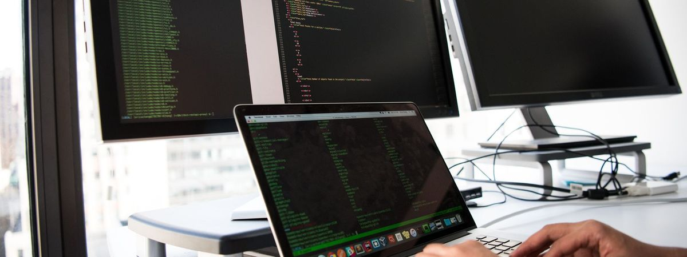
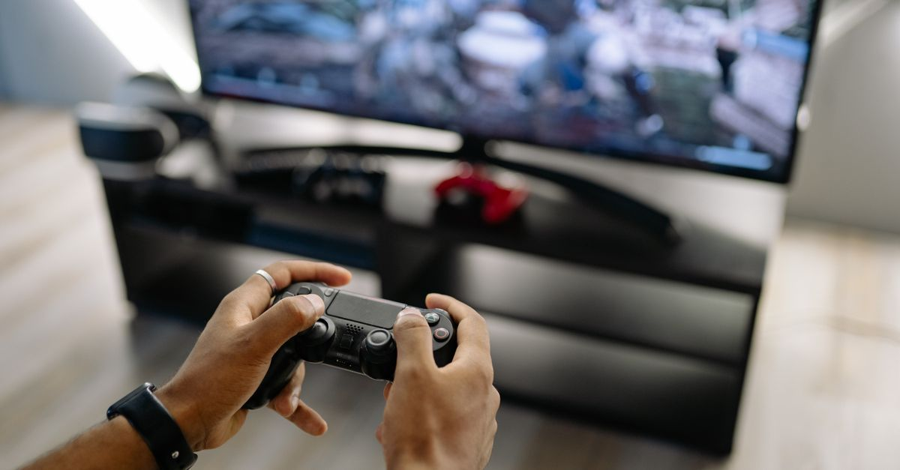

Godot adalah game engine gratis dan open source untuk membuat game 2D dan 3D di Windows, macOS, dan Linux, dengan ekspor ke PC, HP, dan web. Ia dirilis di bawah lisensi MIT, jadi tidak ada langganan, tidak ada royalti, dan tidak ada batas penghasilan seperti di Unity. Kalau kamu penasaran cara bikin game tapi mundur karena biaya, Godot jawabannya. Engine ini dikembangkan komunitas dan dikelola yayasan nirlaba, bukan perusahaan, dan seluruh kodenya terbuka. Versi stabil terbaru per November 2026 adalah Godot 4.7, dan unduhannya hanya satu berkas sekitar 120 MB tanpa installer dan tanpa akun. Bahasa utamanya GDScript, bahasa yang dibuat khusus untuk Godot dan mirip Python, jadi ramah buat pemula yang belum pernah coding. Buat yang sudah bisa C#, Godot juga mendukung C#. Dibanding Unity, Godot jauh lebih ringan, tapi ekosistem aset dan tutorialnya memang belum sebesar Unity.
Kenapa Godot bisa gratis selamanya?
Jawaban singkatnya ada di lisensinya. Godot dirilis di bawah lisensi MIT, lisensi open source yang mengizinkan siapa pun memakai, mengubah, dan menjual hasil karyanya tanpa membayar apa pun ke pembuat engine. Lisensi ini tidak bisa ditarik sepihak. Pengembangannya dipegang komunitas dan dikelola Godot Foundation, yayasan nirlaba yang hidup dari donasi, bukan perusahaan yang harus mengejar laba. Godot pertama kali dibuka ke publik sebagai open source pada 2014 oleh Juan Linietsky dan Ariel Manzur, dan sejak itu komunitas ikut merawatnya. Inilah beda paling mendasar dengan Unity. Unity adalah produk perusahaan, dan syarat pakainya bisa berubah mengikuti keputusan bisnis. Di Godot, syaratnya tertulis di lisensi terbuka dan tidak ada tarif tersembunyi di belakangnya.
Godot vs Unity, mana yang cocok buat kamu?
Buat pemula, perbedaan yang paling terasa ada di tiga hal: biaya, ukuran, dan bahasa. Godot gratis penuh tanpa batas penghasilan, sedangkan Unity Personal memang gratis tapi hanya selama penghasilan tahunanmu di bawah 200.000 dolar, dan paket Pro-nya 2.310 dolar per tahun. Editor Godot hanya satu berkas sekitar 120 MB yang langsung jalan tanpa installer dan tanpa akun, sementara Unity butuh unduhan yang jauh lebih besar. Bahasa utama Godot adalah GDScript, bahasa yang dibuat khusus untuk Godot dan mirip Python. Unity memakai C#, bahasa yang lebih umum di industri tapi butuh belajar lebih lama di awal. Unity masih unggul di jumlah aset siap pakai, tutorial, dan dukungan game mobile serta konsol. Godot punya mesin 2D khusus, jadi buat game 2D, game piksel, dan game 3D skala kecil sampai menengah, Godot lebih ringan dan lebih murah. Buat game mobile besar atau konsol, Unity masih lebih aman.

Bagaimana cara mulai bikin game pertama di Godot?
Mulai dari Godot itu cepat karena tidak ada yang perlu dipasang. Ikuti enam langkah ini:
- Buka godotengine.org dan unduh versi stabil terbaru (Godot 4.7 per November 2026). Pilih versi standar, bukan versi .NET, kecuali kamu memang mau coding pakai C#.
- Ekstrak berkas ZIP-nya lalu jalankan langsung. Tidak ada proses instalasi dan tidak ada akun yang harus dibuat.
- Di Project Manager, klik Create, beri nama proyekmu, pilih folder kosong, lalu klik Create and Edit.
- Pelajari dulu node dan scene, dua konsep dasar Godot. Node adalah satu objek, misalnya karakter atau suara, dan scene adalah kumpulan node yang membentuk satu bagian game.
- Ikuti tutorial resmi Your First 2D Game di dokumentasi Godot. Tutorial gratis ini membawamu membuat satu game 2D utuh, dari karakter yang bergerak sampai musuh dan skor. Kalau belum pernah coding, kursus gratis GDQuest Learn GDScript From Zero bisa jadi pemanasan.
- Kalau game pertamamu sudah jalan, ekspor lewat menu Project lalu Export. Godot bisa mengekspor ke Windows, macOS, Linux, Android, iOS, dan web. Satu proyek yang sama bisa jadi banyak versi tanpa menulis ulang kode.
Kuncinya mulai kecil. Game pertama yang selesai jauh lebih berharga daripada proyek besar yang tidak pernah jadi.
Game apa saja yang sudah jadi pakai Godot?
Godot bukan cuma buat latihan. Brotato, game arena roguelite yang laris di Steam, dibuat dengan Godot. Cassette Beasts, Dome Keeper, dan Buckshot Roulette juga lahir dari engine ini. Bahkan Slay the Spire 2, sekuel game kartu terkenal, dibuat dengan Godot. Daftar ini membuktikan Godot sanggup dipakai kerja serius, bukan sekadar belajar.

Apa kekurangan Godot yang perlu kamu tahu?
Godot bukan jawaban untuk semua orang, dan tiga kekurangannya layak kamu tahu sebelum mulai. Pertama, ekspor ke konsol seperti PlayStation, Xbox, dan Nintendo Switch tidak bisa dilakukan langsung dari Godot karena SDK konsol bersifat tertutup. Kamu butuh perusahaan porting pihak ketiga. Kedua, jumlah aset siap pakai dan tutorial masih kalah jauh dari Unity, jadi kamu lebih sering harus membuat sendiri atau mencari tutorial berbahasa Inggris. Ketiga, buat game 3D kelas atas dengan grafis berat, Godot masih tertinggal dari Unreal Engine.
Intinya, kalau kamu mau bikin game sendiri tanpa keluar uang dan tanpa takut syarat berubah di tengah jalan, Godot adalah titik mulai yang paling masuk akal. Unduh malam ini, ikuti tutorial resminya, dan selesaikan satu game kecil minggu ini. Game pertamamu tidak harus bagus. Ia hanya harus selesai.
Sumber dan Info Resmi
Langkah dan angka di artikel ini merujuk ke sumber berikut:
- Godot Engine: Godot gratis dan open source; engine 2D dan 3D.
- Explore AI Directory: lisensi MIT tanpa royalti; riwayat rilis 4.5 sampai 4.7.2.
- MyCPlus: Slay the Spire 2 dibuat dengan Godot; GDScript, C#, C++; versi 4.7.
- Tech Insider: editor Godot sekitar 120 MB; harga Unity Personal dan Pro.
- Datal Projects: rilis open source 2014; tanpa installer dan tanpa akun.
- Flockbay: Brotato, Cassette Beasts, Dome Keeper, Buckshot Roulette; ekspor konsol butuh porting pihak ketiga.
- Perforce: perbandingan Godot vs Unity; GDScript mirip Python.
- DodaTech Tutorials: langkah unduh dan proyek pertama; ekspor ke PC, HP, dan web.
- Moheb Studio: tutorial resmi Your First 2D Game; kursus gratis GDQuest.